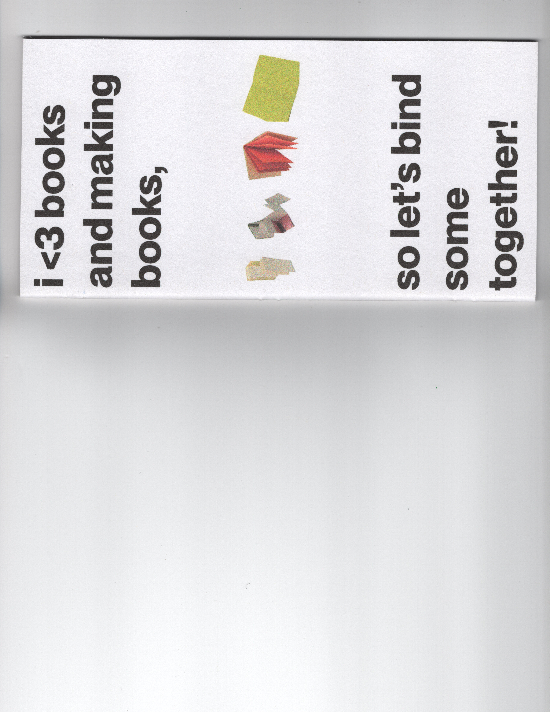
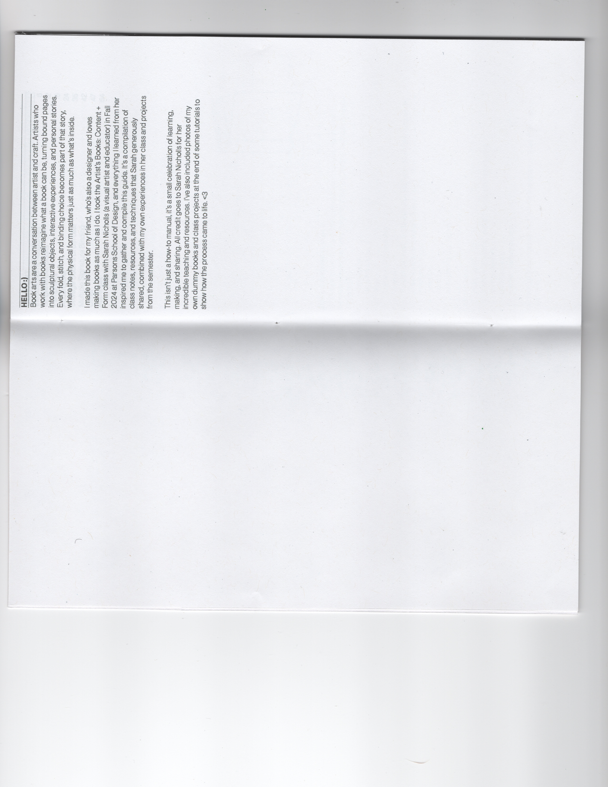
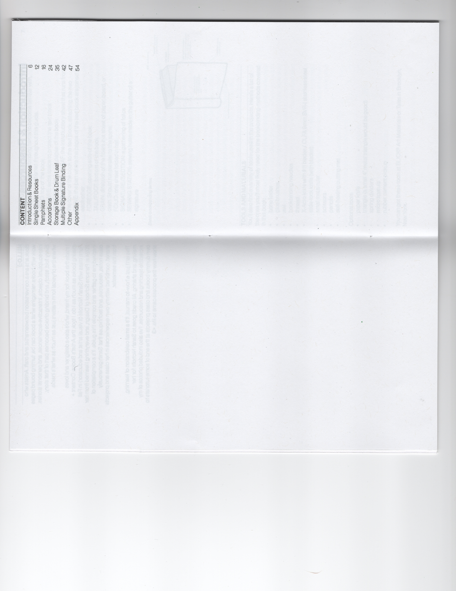
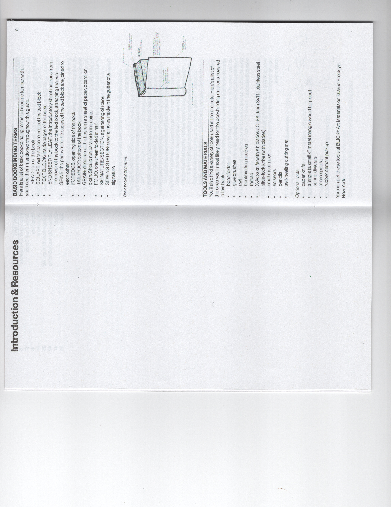
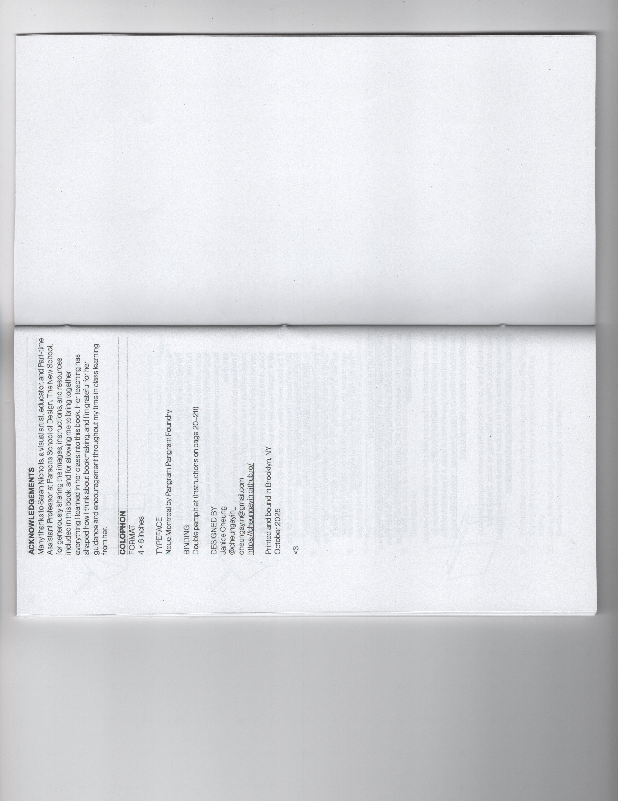
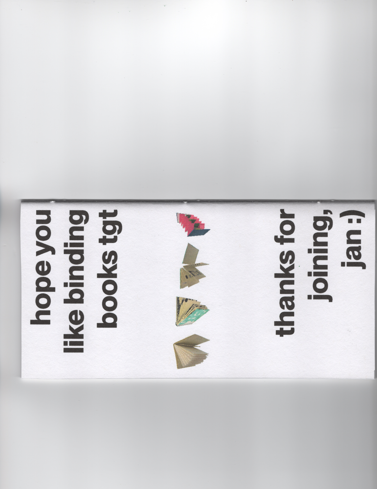
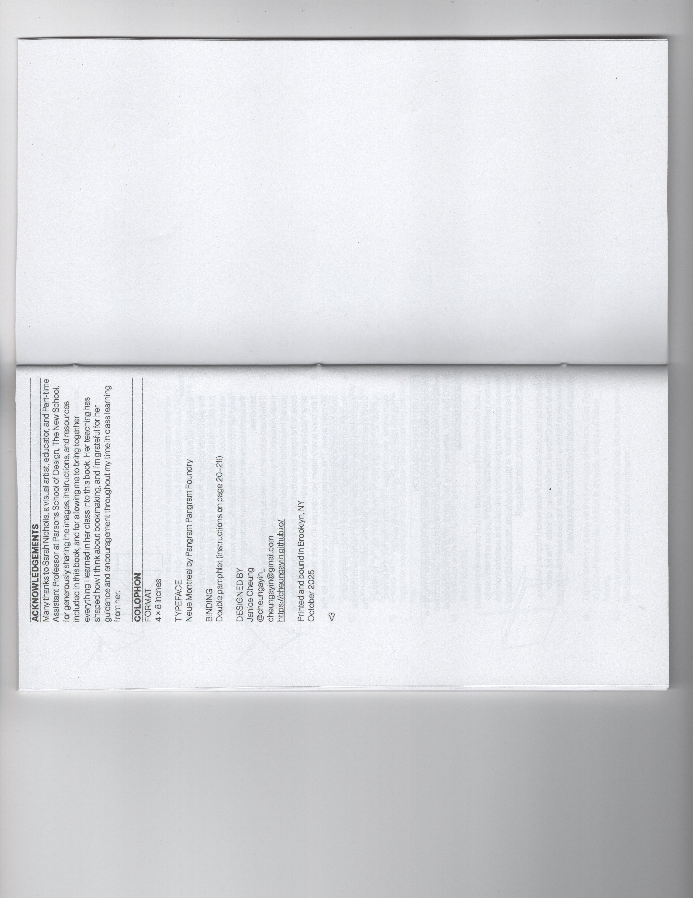
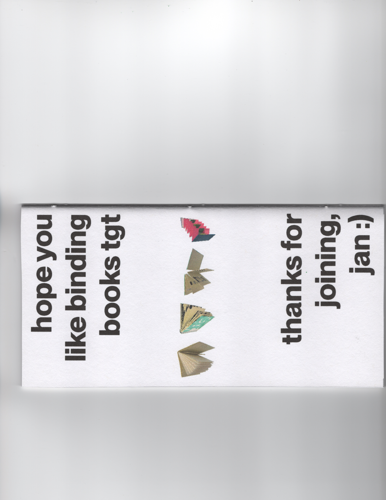
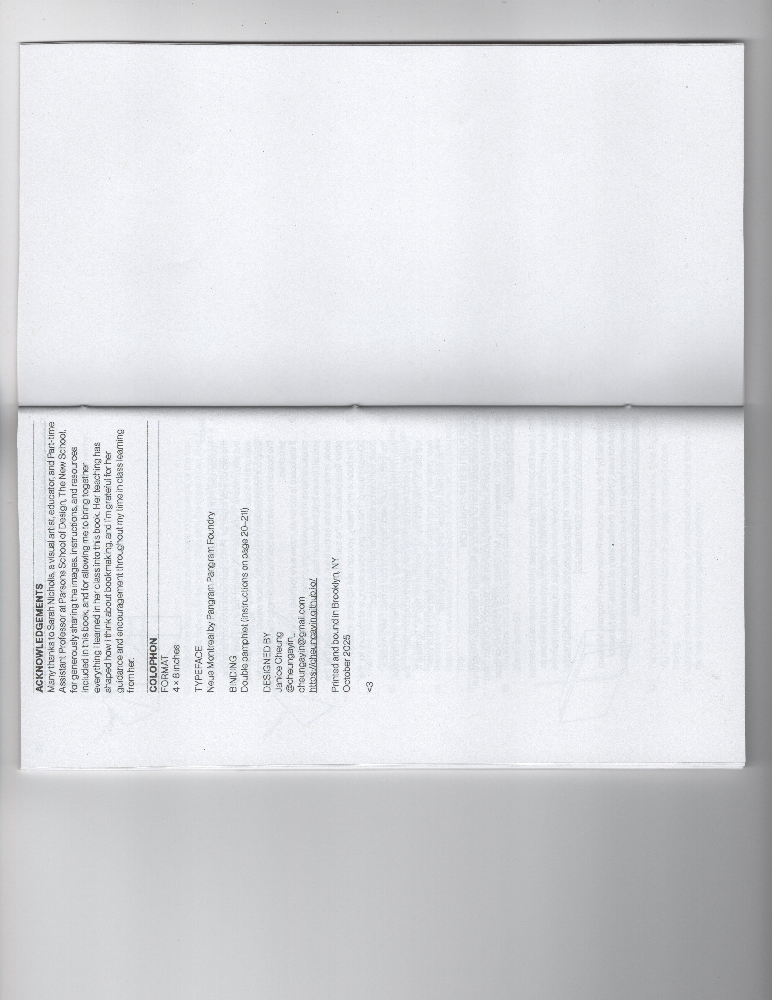
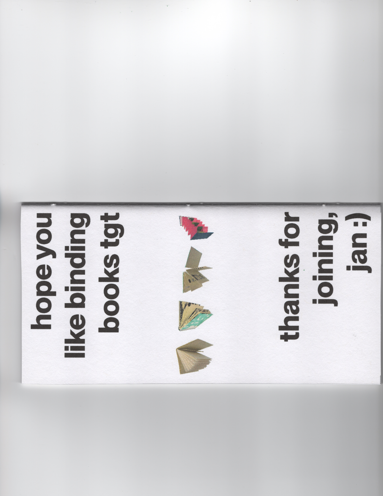

i 🫶 books and making books, so let’s bind some together
for Offset Art Book Fair (October 2025)

Book arts are a conversation between artist and craft. Artists who work with books reimagine what a book can be, turning bound pages into sculptural objects, interactive experiences, and personal stories. Every fold, stitch, and binding choice becomes part of that story, where the physical form matters just as much as what’s inside.
I made this book for my friend, who’s also a designer and loves making books as much as I do. I took the Artist’s Books: Content + Form class with Sarah Nicholls (a visual artist and educator) in Fall 2024 at Parsons School of Design, and everything I learned from her inspired me to gather and compile this guide. It’s a compilation of class notes, resources, and techniques that Sarah generously shared, combined with my own experiences in her class and projects from the semester.
This isn’t just a how-to manual, it’s a small celebration of learning, making, and sharing. All credit goes to Sarah Nicholls for her incredible teaching and resources. I’ve also included photos of my own dummy books and class projects at the end of some tutorials to show how the process came to life.
Color inkjet print on 20lb copy paper and cardstock (cover)
4 × 8 inches
56 pages






 




